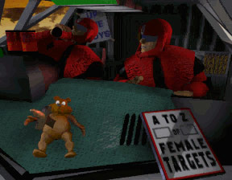
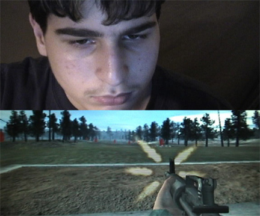
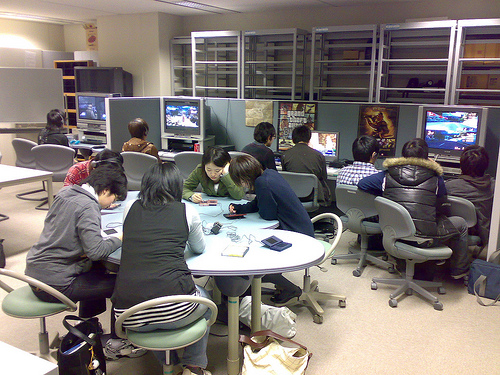

BETWEEN WAR and EDUTAINMENT: THE PROSTHETICS of VIDEO GAMES
jan jagodzinski
University of Alberta*
* Department of Secondary Education, University of Alberta, 347 Education South, Edmonton, Alberta T6G 2G5, Canada. jan.jagodzinski@ualberta.ca
Are We All Force-Fed Sophisticated Savvy Chicken Consumers?
I will start with a brazen, unpopular hypothesis, of which I will endeavor to convince the skeptical reader: Violent video games, especially first-person shooter (or “ego”) games are the symptom (sinthome) of neo-liberal designer capitalism at its purest -- they constitute its fundamental technological fantasy. And a brazen confession: I don’t play video games for hours on end, but I do play.[1]
Those of us who are privileged to live in a technological world must take the term ‘posthuman’ seriously. We are slowly leaving the world shaped by print technologies at the turn of the 20th century, where graphic advertisements were nascent, to a 21st century consumerism shaped by a screen culture.
The transition is as dramatic as the one that took place between chirographic technologies of scriptural cultures to the typographic print technologies of the Enlightenment, a span that took some 500 years. If the wide-spread emergence of television in the 1950s marked the point when the moving image became ubiquitous in American homes, video game computer graphics -- beginning in 1978 with Warren Robinett’s computer game Adventure for the Atari 2600 -- marks at least one of the more significant moments when the computerized moving screen began its invasion of homes. If the earlier screen technologies are generalizable as being ‘passive’ in their reception, the new screen technologies are said to be ‘interactive.’ This binary has received a deconstructive turn as “interpassivity,” a term coined by the Austrian philosopher Robert Pfaller (2000), which I shall develop latter.
This essay grapples with the change of perception that such ‘interactivity’ in the video game ‘revolution’ is bringing about. This change has major consequences for the way posthuman perception is structuring our everyday life, especially the way we learn and hegemonically accept the state of the global symbolic order—always telematically presented to us through a carefully constructed network of ‘screened’ images. My intention is to situate video games in the larger schema of this telematic condition rather than to dwell on the actual games themselves in any depth. There is already enough literature that does this, especially on the internet (see, for example, www.gamezone.com) as well as in important journals such as Game Studies.
I take video games to be the ubiquitous form of being posthuman with the understanding that technology itself has a double function: on the one hand, the human senses are extended by its prosthetics, heightening the acuity of perception and bodily mobility into an extended more powerful ego. On the other hand, such technological manipulation leaves the senses open to exposure, intensifying human vulnerability in direct proportion to the power of the technology itself (Buck–Morss, 1992, pp. 22, 33 & n80). Technology doubles back on the senses, producing a counter-need for a “protective shield against the ‘colder order’ that it creates” (p. 33) as an illusory form of ego-protection. The machine as tool has a correlate in its development as armor, engendering a certain invincibility and with it a certain anesthesia to endure the ‘shocks’ of the social order without pain. This is the thesis that I borrow from Susan Buck-Morss and apply in this essay to video games.
Identifying the way technology changes our perception is difficult to ‘finger’ since such developments are uneven and require the penetration of the technology itself, making it ubiquitous. Hence “the shock of the new” -- to use Robert Hughes’ (1991) characterization of the mechanized time and space introduced by the assembly line as the modern means of capitalist distribution of multiple goods -- is only understood much later, once the competing utopic and dystopic visions work themselves out.
In brief, the various artistic ‘isms’ (Futurism, Expressionism, Cubism, Fauvism, Surrealism, and so on) came to an unexpected resolution by the end of the Second World War with postindustrial capitalism establishing artistic formalism as the West’s hegemonic ideology (Guilbaut, 1983). This required the Situationists to continue a self-reflexive critique, and prompted Gilles Deleuze, in his two cinema books (1986, 1989), to make a distinction between cinema subject to the “movement image,” primarily pre-WW2, and cinema subject to the “time image” after WW2. We might say that Deleuze’s “time image,” pushed to its virtual extensions into hyperspace, is where we are at today.
The argument will be made that video game technology is a site/sight/cite[2] of contradiction that has peaked from the larger social postmodern condition shaped by perversity -- what Žižek (1989, and elsewhere) has referred to as “enjoyment” (more correctly jouissance) -- and a general paranoia. The latter was ushered in first by the loss of ground (totality) the Enlightenment bequeathed the West based on the technologies of print (book, steel engraving) and second by claims to scientific certainty in the triumph of the new screen technologies where truth has become post-ideological by way of `spin’ culture. Such paranoia has been heightened by the post-9/11 climate of terror in which increased uncertainty has led to the global crisis sparked by the Iraq war.
Video game aestheticization has been mobilized by video games to prop up the decentering of masculinity (jagodzinski, 2001). Aestheticization has also been put to work to feminize learning, to make it ‘sexy,’ much as the television series, CSI makes the work of forensic science seem glamorous. As the dividing line between fact and fiction disappears, the ‘spell’ of the signifier of print culture gives way to the ‘spin’ of the image.
Video games are besieged, on the one hand by the growing need to generate fantasies of security and protection. This is manifested in the emergence on the market of a myriad of war and action games, which have spurred a moral panic on the part of an older generation that sees such games as posing a crisis of violence. On the other hand, video games are pressured by the need to harness the new screen imagination for learning as edutainment. In a neoliberalist climate of global capitalism supported and fueled by information technologies, these two contradictory discourses form a schizophrenic closed circuit of ‘survival’ in which sublimated aggression is tempered by the need for multi-tasking, multiple choices, and imaginative flexibility to enter the information job market.
Whereas one set of video games targets protection, the other targets (job) security. The army sets up the fantasy for the first order of games, playing on both duty to the nation and the excitement associated with manipulating technological toys. Meanwhile, the information industry as well as entrepreneurial universities and professors of media/communication studies see opportunities for the complementary realm as edutainment. War and technology -- especially the cinema, as Paul Virillio (1989) shows -- mutually inform and relay each other. “War has always already been madness, film’s other subject” (p.140). Video games and war continue this mutually reinforcing relationship.
The Synopticon and the Schizophrenic Mirror of Video Game Technology
Perception is learned. The way we see the world is always mediated through the technologies that are available to us. The history of photography is instructive in the sense that it offers us some insight into the way perception underwent change when photography became the supplement to typography. It was invented in 1837 during the bourgeois ascendancy. Louis Daguerre would once in a while mistakenly give the wrong prints to his sitting customers. However, they seemed quite happy with the photos, unable to recognize that a mistake had been made, not even when the differences were dramatic —beards and mustaches when there are none and vice versa. Despite the use of mirrors, self-inspection of the face was not a priority, certainly not for men as much as for women. The masculine imaginary was not structured by how one looked but by the position one had in the social order— one’s role, title, or prominence. Recognizing one’s representation, and thereby increasing reflectivity of the self, was a learned task.
If we fast forward from still photographs to their sequential multiple -- George Demeny’s silent chronophotographic gun (Kittler, 1999, p. 136) developed in 1891, a step just before Muybridge’s famous `moving photographs’ -- we already have a further intensification in the inspection of the self—the body and face—to make movement more efficient. Demeny’s serial camera with shutter speeds in the milliseconds was able to dissect, enlarge, store and immortalize successive positions of a face, tracking the movement of the eyes and mouth when sentences were spoken, revolutionizing instructions for deaf and mute people. However, at the same time, such technology helped refine the efficiency of the military goose-step. With the time-sequenced technology of Muybridge and the silent movies, ‘mechanization took command’ (cf. Giedion, 1969), so much so that Hitler was able to practice his facial expressions in the mirror, learning not to be expressive, but reflective, to give back to the crowd the narcissistic image of an intact ego, a face of fear and weeping, before embarking on his hysterical propagandistic speeches (Buck-Morss, 1992, p.39).
In the society of the spectacle (Debord, 1994/1970) the film star first emerged on film, followed by the publicity of celebrity on television. This step increased the intensification of what Lacan (in Seminar XI, 1998) theorized as the societal gaze on the individual. “Self–reflexion” (Giddens, 1991), as opposed to self-reflection, was the early attempt to capture this increased intensification of the imaginary self. Self-reflexion referred to an increase of self-surveillance, of being able to develop a personal life that referred to the late developments of capitalistic modernization, a nascent period before designer capitalism came into its own.
Beck (2002), in theorizing the “risk society,” came up with the term “individuation,” which meant that the taken for granted societal roles no longer applied since information capital no longer required the older model of the “industrial man” encapsulated by specialization that Royce (1964) had described four decades earlier. Now, one has to develop a ‘personal narrative.’ The emphasis on story telling and memory that besieges cultural studies is a strong indicator of a hyped-up self, a self that must amass a profile and parade performative accomplishments on personalized websites. Even lawyers have to advertize, an unheard of proposition only twenty years ago. We have entered yet another phase of intensification of the self by way of self-reflexive technologies that seemingly provide greater control and freedom by way of humanist forms of agency.
As this brief history of visual technology shows, the emergence of the so-called “post-structuralist” decentered subject is a constructed self that fits perfectly into the demands of consumerism in an information age of global neoliberalist capitalism that requires flow, flexibility, cunning and so on. The good-old “material girl” herself, Madonna, was perhaps the star exemplar here, changing her persona on every CD, fooling feminists into thinking that she was ‘liberated.’
The technology of the panopticon, invented in the late 18th century, became the paradigmatic machinic assemblage of the nineteenth century. It has slowly become inverted as a result of the historical developments in visual technology. From the few watching the many (panopticon) we now have the many watching the few—a “synopticon” (Mathiesen, 1997). The celebrity-star has become the commodified body that is managed by his or her entourage. The investment in such a larger than life self is complemented by the banality of those who are now `actively’ looking at and invested in these celebrities.
Countless studies in media audience research tell us just how plural and varied such investiture is, just how many multiple interpretations are possible depending on the social location and identity of the viewer watching. We might name this passive interactivity. This seems to be precisely what Deleuze (1990) had in mind in his description of the “society of control.” In such a society, freedom of movement is already pre-structured by access to times and spaces depending on resources: the right password to enter a space, use a program, receive credit, travel with a passport, be a visible color or the right race, have a certain sexual orientation (as in gay or lesbian bars), and so on. Is not the “society of control” merely the poststructuralist model of the hypertext video game where it appears that one is constructing one’s own narrative in a pre-determined, complex space?
Phillip van Allen (1992) presents a succinct summation of such passive interactivity when he articulates the possible ways of moving in a story space that is based on non-linearity. He mentions the changing locations or times: for example, moving from the living room to the bedroom, or from Tuesday to Wednesday, or from one ‘world’ to another. Also, changing perspectives is possible since the participant can look through the eyes of different characters or the same character but with different attitudes. The character could also be a passive observer rather than one of the active characters. The possibility also exists of changing the scope: the elements of the story can be seen in great detail, or in broad strokes. Changing modes is possible as well: one could read text, see pictures, or hear sounds. Then there is the obvious possibility of reordering the sequence: parts of a story can be viewed in a different order, or the space can be altered via practical or moral choices. -- the participant can send a love letter or assign the protagonist a particular role. Finally, a story can change itself, either randomly, or based on the intentions of the author.
Such cybertext narratives have been referred to as “ergodic” (Aarseth, 1997), a neoteric term deriving from the Greek ergon and hodos, meaning, “work” and “path.” Subjects construct their own ergodic narrative in these virtual reality environments. This I would characterize as also passive interactivity.
To the extent one is a ‘player’ -- a celebrity-star, a mover -- or merely a banal onlooker (the older term was ‘member of the proletariat’), the fundamental antagonism of the paradox between freedom (an active player) and control (a passive onlooker) is smoothed over through such passive interactivity. It provides the fantasy of becoming ‘someone’ in a virtual world even if that is not possible in the so-called ‘real’ symbolic world where a person’s location is confirmed by a social professional role: a teacher, politician, dentist, doctor, lawyer, and so on. Banal service industry jobs—short order cooks, a teacher’s helper, waitress, and so on are neither glamorous nor sexy. Hence the fantasy of identification with game-provided or self-created avatars provides the needed escape. It is more exciting to live online in a virtual city like Second Life than in ‘real’ dull life.
This binary antagonism of `banal/intense’ in consumer designer capitalism repeats itself in the self-surveillance of the synopticon. Banal machinic vision comes in the form of surveillance cameras, deterritorialized eyes that record endlessly in case something criminal happens, which will then be used as ‘factual’ evidence.
Its `other’ is the intense form of the computerized image, digitized and pixelated, that is seemingly malleable, subject to hyper-aesthetic effects. A schizophrenic mirror emerges only because identity is more difficult to ground socially, or rather identity has become malleable, strung together as a series of signifiers, as multiple evolving hybridities. Identity politics, which tries to tie the body down to some sort of identifiable string of master signifiers, is always subject to deconstruction: just who represents who? And who is a representative of whom? In German, the distinction is made between Vorstellung and Darstellung, where the first understanding of representation refers to an ideal image, a description, while the second has a legal implication of supporting someone.
These debates are exacerbated by diasporic trans-generational dialogue, where ethnic and racial differentiations begin to break down, and where alliances like the Rainbow Coalition/PUSH try to go beyond identity politics.
The next step in this intensification process of subjectivity is the posthuman body that integrates computer circuits, pioneered by Stelarc, and the surgical cosmetic body, inadvertently pioneered by Orlan, who set out to question the very act of plastic surgery. Cosmetic makeovers have become more and more common, reaching television serial status. The Swan takes the poststructuralist body to the extreme where each body part becomes subject to machinic circuitry: life coach, therapist, cosmetic surgeon, dental cosmetic surgeon, laser eye surgeon, dermatologist, and fitness trainer form the team. The “Fab Four” in Queer Eye for the Straight Guy will aestheticize apartments, clothes, manners, and attitude to turn the male slob into a prince charming.
Virtual reality has brought the body into screen space through the technological developments of the typewriter (as console interface), television screen (as film), and computer (as processor). Synthesized, these three technologies have led us to the video game revolution, which lies at the threshold of both the posthuman body and VR.
As I have argued elsewhere (jagodzinski, 2004), the interactivity of video games enables console players to have a psychic identification with their avatars that reaches new highs of narcissism. The range of fantasy scenarios is extraordinary, and the simulations that are offered continue to intensify the ego, especially with shooter games. Aren’t these ‘ego-shooter’ games the primary exemplification of a paranoid self? As players, aren’t we saddled with a blinkered subjective view (like the detective in the film Lady of the Lake) -- the very perspective of paranoia where the subject fears being blind-sided because peripheral vision has been greatly reduced?
There are two discourses that capture the perverse jouissance of capitalist consumerism: war action and edutainment video games. I will treat these separately to raise rather ominous questions as to where we are heading in this climate of paranoia and perversity -- paranoia as a result of 9/11 and Bush’s “war on terrorism” (Islam) and perversity as transgressing the superegoic Law in the virtual space of video game worlds.
The Phantasmagoria of War Action: The Armor of Masculinist Fantasies
Aestheticization and hypermasculinity
Susan Buck-Morss (1992) has written a rather brilliant but disturbing analysis of Walter Benjamin’s famous 1936 essay, ‘The Work of Art in an Age of Mechanical Reproduction.’ For most of the essay, just as its title indicates, Benjamin provides the cognitive and political potential of technologically mediated cultural experience, especially of film. However, toward the end of the essay, his optimism fails as he raises the specter of fascism in the way it
“expects war to supply … the artistic gratification of a sense of
perception that has been altered by technology. This is the obvious
perfection of l’art pour l’art. … Its self-alienation has reached such a
degree that it is capable of experiencing its own destruction as an
aesthetic enjoyment of the highest order. So it is with the
aestheticization of politics, which is being managed by fascism.
Communism responds with the politicization of art.”
(Trans. Buck-Morss, 1992, p. 4).
While Virilio has done much to equate war and cinema, there is also the uncomfortable link between Benjamin’s caution and video games. What follows in this section borrows heavily from Buck-Morss’s essay to make the case that video gaming today may well be a repetition of Benjamin’s concerns, but under different conditions —paranoia and perversity. Buck-Morss notes that this “aestheticized spectacle of war has become commonplace in our televisual world” (p. 40). These words were written 20 years ago, well before Fox and CNN presented us with “reality war” in Iraq reported by the em(bed)ded journalists and well before violent video games came out in full market force. Buck-Morss attempts to argue that the alienation of the senses rests with the shift of aesthetics that refers to “the imaginary rather than the empirical, to the illusionary rather than the real” (p.7). Pushed further, such an aesthetic is a masculine fantasy that “is entwined with the idea of freedom in Western history” (p.8) and the narcissistic fantasy of total control.
“The truly autogenetic being is entirely self contained. If it has
any body at all, it must be one impervious to the senses, hence
safe from external control. Its potency is in its lack of corporeal
response. In abandoning its senses, it of course gives up sex.
Curiously, it is precisely in this castrated form that the being is
gendered male—as if, having nothing so embarrassingly un-
predictable or rationally uncontrollable as the sense-sensitive
penis, it can then confidently claim to be the phallus. Such an
asensual, anaesthetic protuberance is this artifact: modern man.”
(ibid.).
Such a description immediately conjures up hypermasculine (and hyperfeminine) figures of the video game world. The fantasy of the phallus is the tale of all-male reproduction, the magic of creation ex nihilo. Perhaps it should come as no surprise that this is precisely the aim of Stelarc skin suspensions, to overcome gravity, externalizing the inside of his body with sensors, amplifying the beating of his heart, the circulation of his blood and so on, to create his own uterus and give ‘birth’ to himself.
Anxiety and the ‘other’
Susan Buck-Morss is overreaching in this strong generalization. However, there is the uncomfortable thought that such a designer aesthetic is based on the male body, which is continually threatened by the feminine, as has been the long-standing argument by many feminists (see image below from the video game Gender Wars).
The fantasy space of video games offers a myriad of possibilities to dispel anxiety about the ‘other’ sex. Recall that the reception of gays and lesbians (LGBTQ) into the heteronormative climate was through consumerist fantasies (Hennessy, 2000). Popular entertainment culture continues to parade LGBTQ mostly as acceptable comedians (Rosie O’Donnell, Ellen DeGeneres, Paul Reubens (as Pee-wee Herman), chic lesbians (as in the L-Word), and gay design experts (e.g., the ‘Fab Four’). Feminization of the masculine body is a long-standing Hollywood trope, recently reenacted by Mel Gibson in Nancy Meyers’ What do Women Want (2000) where the question mark is conspicuously missing as if the question had been exhausted or is no longer possible to contemplate seriously.
Constructing sex/gendered avatars according to any one imaginary desire has become child’s play in many game environments. Why? The proliferating middle between the binary of male/female and straight/queer helps to alleviate the anxieties of the fundamental antagonism between them, which has not disappeared. These proliferating identities are necessary to designer capitalism; they constitute it. The “material girl” had it right all along for marketing success.

Phantasmagorical technology
Against this backdrop, beginning in the 19th century, about the time when the bourgeoisie was a rising class, Buck-Morss (1992) traces down the development of “phantasmagoria,” a narcotic (anaesthetic) “made out of reality itself” (p.22). “Phantasmagoria” describes an appearance of reality that tricks the senses through technical manipulation.
Phantasmagorias are technoaesthetics. … The goal is manipulation of
the synesthetic system by control of environmental stimuli. It has the effect of anaesthetizing the organ, not through numbing, but through flooding the senses. These simulated sensoria alter consciousness,
much like a drug, but they do so through sensory distraction rather
than chemical alteration, and -- most significantly -- their effects are experienced collectively rather than individually. … Sensory addiction to
a compensatory reality becomes a means of social control.“
(ibid., p.22-23, emphasis added)
Does one conclude from this that phantasmagorical technologies provide a way of not dealing with ‘empirical’ reality? “Art as a sensual experience enters into the phantasmagorical field as entertainment, as part of the commodity world” (ibid.). From this point one could extrapolate that the video game as a phantasmagorical technology has intensified the individual rather than the group -- although LAN parties and global online playing could still be
considered a ‘collective’ experience, albeit without physical bodies being present.
If Benjamin described the flâneur as being self-trained in the capacity to distance himself from the crowd, turning reality into phantasmagoria by fixating on the goods behind the display windows, the hyper-flâneur today manipulates the window display by him or herself. The flâneuse would visit the grand magazines to look and shop. Online and television shopping where a phone call is made to purchase a limited number of goods for sale for a certain period of time, could be considered its hyper-expression today -- ebay.com being a mixture of both. The vitrine of the commodity display at the fin-de-siècle now becomes the fantasy screen at the turn of the fin-de-millennium that can be manipulated within the parameters of a program, and changed -- if one is able to hack it.
Virtual reality and video games as the Gesamtkunstwerk
To what extent will VR become a computer Gesamtkunstwerk that pulls the console player into its aesthetic totality, to become a Wagnerian dream made three dimensional where the “intoxication, the ecstasy that might have affirmed sensuality, is reduced to surface sensation” (Oosterling, 2003, p. 33)? One thinks of the ‘pleasure rooms’ that are found in the future arcades in Spielberg’s Minority Report (2002) as the next step. As Oosterling further maintains, the
“artistic Gesamtkunstwerk is characterized by a conceptual over-
determination by a cultural or political Idea(l) of a diversity of
artistic media and disciplines. ... The subordination of art to other
domains destroyed the openness, so characteristic for avant-garde
art.” (ibid.)
One question to ask is whether the video game genre can be considered as an individuated Gesamtkunstwerk, like Wagner, “intimately related to the disenchantment of the world” (Adorno, quoted in Buck-Morss, 1992, p.107). Is it an attempt to produce a totalizing metaphysics by means of every instrumental and technological means available? Is the task of the video game genre, like the music of Wagner, “to hide the alienation and fragmentation, the loneliness and the sensual impoverishment of [post]modern existence that was the material out of which it is composed” (ibid., p. 26) ? If the threatened bodies, shattered limbs, physical catastrophe— the realities of modernity—were the underside of the technical aesthetics of phantasmagorias as total environments of bodily comfort, could it be that video games fulfill the same role, given the symbolic order is decentering in its authority structure?
Video games and youth violence
Psychological ‘scientific’ research, especially neurological research that uses MRI scanning (Media Psychology, January 2006), tries to link aggression to the playing of violent video games. This seems especially misdirected in light of Buck-Morss’s argument concerning the phantasmagorical impulse. Time and time again, no link has been found between violent video games and aggression; as a matter of fact, violent youth crime rates in the U.S. have gone down as the gaming industry has increased. Nor has the link conclusively been made between violent video games and the question of desensitization. The link between fantasy violence and actual violence is simply too complex and situationally specific for a technological, ‘scientific’ answer. No doubt complexity theory will be the next scientific wave of attack on this problem.
The MRI scan shows precisely what is going on—the rather banal confirmation that the enjoyment centers like the amygdala are being stimulated by action games while in the frontal cortex the area of cognition is less affected, which is precisely the brain area the edutainment educators wish to harness. Action videogames and edutainment are two sides of the same phantasmagorical coin that reinforce one another.
The bigger question in the context of this essay is why are there so many aggressive games in the first place? And why Gerald Jones (2002) -- in his groundbreaking book, Killing Monsters: Why Children Need Fantasy, Super Heroes, and Make-Believe Violence -- decimates the so-called “media effects” research and shows us why such violent imagery more often soothes the beast rather than making it roar. Killing screen monsters sublimates aggression rather than promoting it.
The claim to ‘desensitization’ is better understood as “postemotionality” (Mestrovic, 1997), an overloading of the senses that may lead to distancing and isolation as a coping strategy to live in such an aggressive and competitive social order. This is perhaps the new way the phantasmagoria of technology enable youth to endure the ‘shock’ of postmodernity (the banality of work in the service sectors, for instance) without suffering subsequent pain, which is certainly real enough for many people.
Mirror stage, paranoia, narcissism, and fascism
In Section XI of Buck-Morss’s 1992 paper, takes her clue from Hal Foster’s (1991) analysis of proto-fascist art and surrealist artists like Max Ernst and Hans Bellmer who struggled against it in different ways. She maintains that Lacan’s essay on the mirror stage, delivered in Marienbad in 1936, has much in common with Benjamin’s essay on the mechanization of art, published in the same year. The pre-egoic fragmented body was made the theme of surrealism as an anti-fascist protest art.
In distinction, Lacan’s egoic mirror stage (age 6-18 months) presents a unified body that covers up this very lack. Therefore, the idealized, illusionary, unified ego—non-vulnerable as a spectacular reflection of mis(re)cognition— has fascistic tendencies in Buck-Morss’s view. This line of thinking may be extended in the sense that paranoia, which characterizes the ego according to Lacan, is intensified by the inverted panopticon (synopticon), where not being in the gaze leads to performative limbo -- no recognition and no identity -- which increases aggressivity. Action video and ego-shooter game fantasies present idealized masculine and feminine bodies. The actual fragile body is given its armor in the form of various weaponry, revealing a hypernarcissim, surpassing the narcissistic disorders studied by Freud during WW1 and Lacan at the end of WW2.
Buck-Morss writes,
“(T)he significance of Lacan’s theory emerges only in the historical
context of modernity as precisely the experience of the fragile body
and the dangers to it of fragmentation that replicates the trauma of
the original infantile event (the fantasy of the corps morcelé)“ (p.37).
In a climate of terrorism, bullying, and conflict (minority clashes) in so many lands, violent video games enable a certain ‘numbing’ to take place against actual everyday life at the imaginary (ego) level through the players’ manipulated hyperactive avatars, inflating the narcissistic ego and the illusion of actual agency. The more narcissistic and violent the better, narcotic sharing the same root word as narcissism.
It should not surprise us that Spike TV, which hosts the Video Game Awards gala, gives an award each year for “Most Addictive Video Game.” The mass is now manipulated through designer capitalism. Segments are targeted; ethnographic studies done; desire researched, created, and then marketed back again; profiles taken; and descriptive and disparate signifiers googled into categories. Perhaps more frightening to note is that these are hyper-extensions of the administrative and organizational genius of Adolf Hitler’s Minister of Armaments and War, Albert Speer, who had much of such technological ‘humanist’ efficiency already in place (Singer & Wooton, 1976).
Teletactility
How this operates in the action war video games seems frighteningly obvious since hypernarcissism is sustained by the practical weaving of self-determination (control) and exposure (being killed). Each and every potential fragmented part of the body, the BwO in Deleuze and Guattari’s idiom, is looked after in this paradoxical way: eyes through eyephones, the ear through earphones, hands though the keyboard, data glove, joy stick and touch screen. Full body suits that turn the skin into an interface and support complete immersion in data space are being worked on. All this will be brought into virtual reality as a complete sensual perception. The claim is that communication across physical distances of sounds, images, and touch (what is referred to as “teletactility”) will eventually be possible (Benthien, 2002, p. 224-225).
Interactivity in the future of VR gaming is touted as the return of the sense of touch. The intensification of the self that I traced earlier ends up at this limit, the limit of touch where experiments in cybersex wearing ‘touch suits’ end up as self-masturbatory experiences (Kroker & Kroker, 1996, pp. 37-38). “I have to do to myself what I want the other person to feel. This turns my own body into a self-referential object of communication” (Benthien, 2002, p. 224). Such experiments in cybersex confirm the current hypernarcissism. Rather than bridging and feeling with other bodies, the affect turns into self `enjoyment’ (jouissance). The huge paradox is offered by Stelarc, in his claim that technology enabling touch to occur across space will require the armor of VR body suits—both outside the body and inside through nanotechnology—so that the feeling of oneself is hyper-intensified and somehow transmitted to the other. It’s best to call this technological fantasy a hyper-masturbation —Viagra’s ‘technological’ equivalent.
Anxiety, fantasy, emotion
Gerard Jones’ (2002) accumulation of a counter-literature to show that playing aggressive games actually makes one more passive through active sublimation confirms the high anxiety of living with the “regime of computation,” to use Hayes’ (2005) phrase. Are not sex, violence, and stereotypes precisely the anxieties of our age? The vulnerable embodied mind is besieged by stress, and stress is simply another name for shock in our designer world where vulnerability to the environmental crisis increases, the chance of global epidemics spreads, there is increased uncertainty of finding one’s place in a symbolic order where everything is supposed to be possible if you only try ‘real hard,’ and where health and security are the number one priorities for the well-off.
Violent video games, DVDs, movies, music, and comics provide a safe fantasy world within which children learn to become familiar with and control the frightening emotions of anger, violence, and sexuality that await them. This is the `healthy’ side of the debate since the majority of children are trying to start life in the post 9/11 climate of terrorism. There is also that side of video games where fantasy structures that feed the aggressiveness of the ego do not necessarily result in violence. For a percentage of the population who are homophobic, racist, sexist and so on, violent media will always already be an excuse, but for many more, they will provide a way to transgress the Law through a père-version of it (jagodzinski, 2004).
Video War Games
Retired lieutenant colonel David Grossman has a long history as a born-again Christian touting the dangers of first-person shooter games (better referred to as ego games), selling his particular brand of anxiety to parent groups and teacher associations, claiming that such games have a direct link to high school killings. While this connection has been often debunked, the fantasy of its possibility is not easily dispelled. Why that may be so rests upon another accusation that Grossman has made, less dramatically, in the past claiming that the U.S. Army uses video game technology to improve the tactical defense strategies and sharp-shooting skills of their new recruits. The Army has never denied this. What they have denied is the more incendiary remarks of the direct link to shooting sprees in schools. Marine simulation experts modified the commercial game Doom II to create Marine Doom as a tactical training tool. The success of Marine Doom led the U.S. Marine Corps to contract with MÄK Technologies for the development of Marine Expeditionary Unit 2000 in the following year. This was the first game funded and developed by both the Department of Defense and the commercial game industry. The game was both used for U.S. Marine training and released to the public.
Grossman, like many others, claims that these games desensitize shooters to their targets. This is a different claim from the one that the games can improve marksmanship, which is undisputed. Yet, it is precisely the distinction between the fantasy of the imagination in the way enjoyment is embodied and the closeness of killing in actual combat that makes the striking difference.
The two experiences, psychoanalytically speaking, have an abyss between them. There is however a pathological stain in the ego. Anyone is capable of killing pressed under the right circumstances. However, every army boot camp sergeant knows that under combat conditions only a small percentage of soldiers are willing to kill without hesitancy, that those who do so are already somewhat pathologically ill, and that the killing (no matter how far away the target is seen to go down) leaves deep emotional scars -- the trauma of “post-kill stress” that is part of war.
Killing the enemy remains the “dead elephant in the living room that nobody wants to talk about” (Lt. Colonel Elspeth Cameron Ritchie, quoted in Baum, 2004). Killing is the one main inconsistency in the institution of the Army as the “big Other” who is “supposed to know” and does not “lack.” Killing forms its sinthome, the impossible junction of enjoyment (jouissance) with the signifier (killing). Fantasy of war has to cover over this impossible signification, to conceal the Army’s inconsistency. The fantasies of war video games, such as America’s Army, conceal the fact that the Army as the symbolic order embracing the soldier is structured around a traumatic impossibility around killing and dying that cannot be symbolized.
America’s Army cloaks the chance to kill in the formal code of conduct that the real Army theoretically abides by at all times. It seems that the soldier is always placed on the edge of being either alienated by the Army or never being fully embraced by it. Only under circumstances of pomp and ceremony when medals are awarded is recognition given. Otherwise the Army acts as if it does not lack—the general is always ‘right’ no matter what. When a soldier breaks down, has an anxiety attack, this means that the fundamental fantasy that held and enabled his ‘soldiering’ has broken down. S/he faces the sinthome itself —killing. Killing is the nugget of a soldier’s enjoyment that escapes meaning. This is why the fantasy scenarios, either in diaries or through war game videos, provide the necessary fantasy to stay in the Army until that fantasy is shattered on the battle field or by some other incident after the conflict is over and the soldier comes home. Simply by questioning the Army, a soldier has already ‘lost’ belonging to that Army. For the Army offers the fantasy of enjoyment in being part of a `band of brothers:’ in patriotism, in duty and in being defender and protector of a moral code couched in the values of liberty, democracy, and freedom.
Killing
By objectifying the enemy as much as is possible, the percentage of soldiers firing at the enemy rose from 15% to 90% between WW2 and Vietnam (these are claims one reads, but there is no certainty to those figures). This is what created Post-Traumatic Stress Disorder (P.T.S.D.). Soldiers maintain their imaginary fantasy space through euphemisms such as `targets’ and black-humor inspired epithets to depersonalize life-altering injuries to protect the soldier’s psyche, like calling a soldier whose knee amputation below the leg resembles a pink sausage casing—a “baloney.” Soldiers may also exhibit a Stockholm Syndrome attitude by maintaining pride in their service, not acknowledging their wounds so as to deny that their trauma may have been for naught.
The ‘knife scene’ from Spielberg’s Saving Private Ryan exemplifies the hand-to-hand combat of what killing the enemy must be like—with eye-to-eye contact where death is felt. That sort of war is basically over. The last organized bayonet charge was during the Korean War. Yet, soldiers invent this killing fantasy in their diaries. They make-up stories about the way they have killed someone with a bayonet, in the way the dying victim looked into the attacker’s eye with dismay, shocked to see who their killer was (Salecl, 2000/2001).
From a psychoanalytic point of view, killing is the one act that defines the Army, and it is the one act whose affects are masked and repressed. This anxiety is continually worked over, distanced and ignored. With a felt lack within oneself, and a lack in the institution of the Army itself, anxiety (which has its object all too close) is thus encountered. To relieve the guilt of killing the plagued conscience is transferred over as a responsibility to the Nation, as a duty to protect it, and so on.

Theater and Recruitment
Perhaps the single most telling euphemism used by the U.S. Army that associates the measure of enjoyment (jouissance) with the fantasy of combat has been theatre. Theatre is now the operant word for combat and the experience of actual fighting. The use of such a dramatic term is a direct way to engage with the fantasy of war. To sex up war requires mobilizing the fantasies of getting into shape, shooting ‘awesome’ weapons, manipulating technologically sophisticated toys like tanks, helicopters, and fighter jets, learning death defying skills like rappelling or land and sea navigation. Then, of course, there is comradeship and heroic patriotism—the duty to one’s country.
In his recent book, From Sun Tzu to Xbox: War and Video Games, Ed Halter (2006) does an excellent job showing just how this has been achieved, with his opening introduction exploring the impact of America’s Army, the first free downloaded video game that was developed by the Department of Defense in 1999 to actively recruit for the Iraqi war—and recruit it did! Previously, Lieutenants Dan Snyder and Scott Barnett had reworked the source code (released freely) by the creators of Doom from the Id Software Corporation to create Marine Doom II in 1997 to recruit marines. That success prompted the Department of Defense’s involvement since in 1999 the number of recruits to the Army had been the lowest in thirty years.
Congruency and realism
In a somewhat spurious argument, Alexander Galloway (2004) maintains that a “congruency requirement” is necessary if a video game is to be called “realist,” that is, `socially real.’ This requirement is met when the social reality of the gamer and the social reality of the game are contextually linked via the game itself. In addition the social realism requires "a more-or-less direct criticism of current society and morals" and (following Fredric Jameson) "a 'restricted' code" captured from out of the subjugated classes "manages to become elaborated or universal” (ibid.). He draws on two games that are direct copies of American ego-shooter games like America’s Army but without the virtuoso photorealism of detailed texturing and deep resolution that the army’s commercially licensed Unreal graphics engine is able to produce. The Central Internet Bureau of Hezbollah published Special Force in 2003, while the Syrian publisher Dar Al-Fikr released Under Ash in 2001. Both meet the requirements of congruency and realism since the console player is directly engaged in the country’s conflict. The Palestinian movement is able to depict its own “restricted code” in a shooter game. As the ideological opposite of America's Army, these two games are first-person shooters played from the perspective of a young Palestinian participating in the Islamic jihad in South Lebanon. They are, in a sense, the same militaristic narrative as American-made shooters but seen instead from the Islamic fighter's point of view.
Alienation and the Real
These video war games take us back to Benjamin’s concerns at the end of the “Artwork” essay when he writes about “the crisis in cognitive experience caused by the alienation of the senses that makes it possible for humanity to view its own destruction with enjoyment “ [jouissance] (Buck-Morss, 1992, p.37). The remarkable difference between such war game videos and the Call to Duty series, where the WW2 soldier remains heroic, is made evident when one watches an anti-war film like Sam Mendes’ Jarhead (2005). The opening reflective statement made against a black or empty screen points to another ‘truth’: the missing image and what it alludes to can best be grasped as Lacan’s register of the Real—the horror of the war that can never be fully represented. Anthony Swofford, the narrator, has been traumatized:
“A story: a man fires a rifle for many years and goes to war … and afterward he turns the rifle in at the armory and he believes he’s finished with the rifle … but no matter what he might do with his hands ... love a woman … build a house, change his son’s diaper… his hands remember the rifle.”
The rifle has become his objet a. It will never leave him. The film closes with this same remarkable statement, only this time a line of soldiers are presented as a mirage walking in the “desert of the Real,” to echo Žižek (2002). The empirical is Real, not the Imaginary, which is precisely what is continually disavowed in all such gaming.
Edutainment—Learning as Prosthetic Ideology
Let’s start with an interesting link, given what has been said about video war games. Mike Van Lent, a research professor at the University of Southern California, editor of the Journal of Games Development, conducts studies for the Institute for Creative Technologies (ICT), a 45 million dollar operation that collaborates with both defense and entertainment industries. Their mission statement:
“to build partnership among the entertainment industry, Army,
and academy with the goal of creating synthetic experiences so
compelling that participants react as if they are real. The result is
engaging, new, immersive technologies for learning, training and
operational environments.” (http://www.ict.usc.edu/)
Should this be a surprise? The leading proponents of videogame learning (James Paul Gee, J.C. Hertz, Randy Hinrichs, Marc Prensky) are entrepreneurial professors and business types who desire to jazz up education, which is perceived as lagging behind the times. School, after all, is boring.
The use of video games for learning brings us into the heart of the posthuman, for it redefines what learning is for us as cyborgs. Ultimately, what is being advocated is a prosthetic enterprise where learning is defined by a restricted cognitive code—humans ‘talking’ to AI machines. As Gregory Bateson (1987) put it in his famous Steps to an Ecology of Mind, “We might regard patterning or predictability as the very essence and raison d’étre of communication. … (C)ommunication is the creation of redundancy or patterning” (p. 412). This model of communication is highly reductive and simplistic, but it is the one that game theory must use to make its case. Playing is a process where something in the game transfers into the mind. This information is not necessarily unfiltered or undistorted, but it does leave mental traces (the areas of the mind can be potentially mapped out by fMRI scans), which transform various mental representations that are already in place. Such cognitive residual traces might resurface again in the form of certain behaviors—aggressive and violent behavior (war and action games) or advanced thinking and reasoning (edutainment). It is simply a matter of good design as to which way the console player leans—action play or learning.
Playing to learn or learning to play
Gee (2003) freely admits that “the power of video games, for good or ill, resides in the ways in which they meld learning and identity” (p.199, added emphasis). Unfortunately, there is no psychoanalytic attempt to understand the ‘play’ of these identities (jagodzinski, 2006). For Arnseth (2006), who is skeptical of the entire enterprise, the question of game learning revolves around the inversion “playing to learn” or “learning to play.” The first aligns itself with cognitive thinking and reasoning, presenting a limited understanding of literacy in the form of mastering skills, tools, and signs. Tasks presented may be fast, active, multiple, and exploratory. The second has its emphasis on playing rather than learning. It is through play that an activity is mastered within a more social and cultural perspective.
The divide between the two approaches is between quantitative and qualitative learning, Gee’s (2003) work on videogame learning falling into the latter category. I will continue to discuss his point of view further since he is representative of the most sophisticated argument for edutainment.
Gee and neoliberalism
In Gee’s major work (2003), one of the most obvious aspects that emerge is his post-structuralism where the interactive agent (the student) is allowed to interactively explore a closed body of knowledge (a structure or a code of the game) to his or her heart’s content. If the master or empty signifier is “actual killing” as in the war game videos that form its ideology, the master signifier is, of course, learning this key signification. Coming from a theoretical linguistic background, Gee points all his efforts in this post-structuralist direction. Learning is based on semiotic domains, and his 36 learning principles fit squarely within a neoliberalist dream of cognition for designer capital. As he says elsewhere, “many problems a player faces can be solved in three ways: using stealth, confrontation, or persuasion” (Gee 2005). This sounds just like neo-liberalism, precisely what one learns on the Survivor television series as the way to score the big prize. Reality televised game shows reinforce the need for this “flexible” subject. As Gee puts it,
“Video games operate on the principle of ‘performance before
competence.’ That is, players can learn as they play, rather than
having to master an entire body of knowledge before being able
to put it to use. … [Videogames encourage] good skills in a
world full of complex, high-risk systems.” (ibid.)
Context is everything. Playing these games prepares students to deal with Beck’s (1992) “risk society,” to work with smart tools, “much as in a modern science lab or high-tech workplace.”
To be a good gamer, it should be noted, takes some 50 to 100 hours to win, even for good players. There is a reluctant slip of admission that the game’s structure (its code) also structures the player. Such a symbiotic relationship overlooks the loss of agency by the console player -- one aspect of interpassivity mentioned at the start of this essay. As Gee (2003) reluctantly states, “What we are dealing with here is talk and thinking about the (internal) design of the game, about the game as a complex of interrelated parts meant to engage even manipulate the player in certain ways” (p. 42, emphasis added). He further states, “This is metalevel thinking, thinking about the game as a system and a designed space, and not just playing the game moment by moment. Such thinking can open up critique of the game. It can also lead to novel moves and strategies, sometimes ones that the game makers never anticipated” (ibid).
H(ij)acking young minds
This last statement hints at what is never mentioned in edutainment discussions: that the only “real or true” learning happens to hackers who understand the platform design. Hacking is usually perceived as illicit or illegal knowledge since it is an act that changes the game itself. Most often it is self-reflectivity about the pre-established internal design itself, which is praised -- what is simply another term for `autopoesis’ in complexity theory founded on computational and information technologies. Thus, for Gee, critical learning “involves learning to think of semiotic domains as design spaces that manipulate us (if I can use this term without the necessary negative connotations) in certain ways and that we can manipulate in certain ways” (p. 43). Modifying games (to ”mod” them) is not the same as hacking them. This is the myth of maintaining that the student is a producer rather than a consumer. If you are presenting a cybernetic understanding of learning, this (ab)use of manipulation is not perceived negatively at all. If, on the other hand, as I have been arguing, such a cybernetic poststructuralist subject is what the ideology of designer capitalism is searching for -- a subject whose anxieties can be relived through game learning -- then the debate is moved onto political, ethical and ideological grounds. The difference is between the h(ij)acking of young minds by the edutainment industry and allowing them to hack.
Interpassive Ideology: Training the Unconscious through Fantasy

Louis Bedigian’s (2003) interview with Gee perhaps reveals most succinctly the way the lures of edutainment’s `learning machines’ take place. Commodity fetishism at its purest emerges in the way ideology manifests itself here. Gee gives us three succinct ways:
First, “Games give verbal information ‘just in time’ when and where it can be used and ‘on demand’ as the player realizes he or she needs it.” This is the way the machine ‘talks’ back to the player.
Second, “good games stay inside, but at the outer edge of the player’s growing competence, feeling challenging, but `doable.’ This creates a sense of pleasurable frustration” (emphasis added). The mention of “pleasurable frustration” is exactly the enjoyment (jouissance) of the bodily drives, the pleasure in simple repletion, where failure can be pleasurable if it remains “at the outer edge.” Gee (2005) tells us that psychologists call this a “flow state.”
Third,
“good games create […] a ‘cycle of expertise’ by giving players
well-designed problems on the basis of which they can form
good strategies, letting them practice these enough to routinize
them, then throwing a new problem at them that forces them to
undo their now routinized skills and think again before achieving,
through more practice, a new and higher routinized set of skills.”
Here we have the routinized satisfaction of the drives derailed to introduce a lack, that is desire. These three rules for a “good” game, defined strictly by the form of a game’s design, come together by solving the “motivation problem.” By this Gee refers to the projected identification with the avatars through interactivity in virtual reality.
Ideology and interpassivity
For the rest of this essay I would like to dwell on the way a neoliberalist ideology is snuck in through video games. It seems obvious enough that a flexible subject is being trained for the workforce through edutainment. That same subject is also being groomed possibly for army service, and also given a way to work through the anxieties of the age through such phantasmagorical play. The tyranny of work is replaced by the tyranny of play. Given Buck-Morss’s fears, it seems impossible not to identify some proto-fascist tendencies in avatar identification. Ideology, by way of interpassivity can be best demonstrated by Iain Bank’s (1995) game playing protagonist in Complicity.
Because Despot is interactive, Despot will go on building your world for you even if you leave it alone because it actually watches you; it learns your playing style, it knows you, it will try its little damndest to become you. All world-builder games — emulating life or at least some aspect of it—develop and change according to their programmed rules if you leave them running alone, but Despot is the only one that with a bit of coaching will actually attempt to emulate you.” (p. 53, original emphasis in Atkins, 2003, p. 146.)
The object looks back
As Lacan argues in Seminar XI, the object looks back at us.
“It is watching us watching it. We do not simply ‘look’ or `gaze’
or ‘watch’ the unfolding text, but the text is watching us in a
way that can only have a potential to disturb in our age of
increasing technological surveillance” (Atkins, 2003, p. 146).
Interactivity means
“it must watch the reader. We act. It reacts. We act again. It reacts
again. It rewards our attention with attention of its own. It
might be presented to us in ‘real-time’ but we are locked in a
complex dialogue or dance with the machine that amounts to
a sequence of exchange that goes both ways. Even not to act is
an act that signifies” (p. 147).
The text we read watches us over time, it presents the illusion of ‘knowing’ us as we come to `know’ it, of `reading’ us as we `read’ it. The player of Despot is being “textualized” by the game, rendered into binary code representing our action of reading in a way that means our textual selves might be recorded, transmitted, and replicated. “We are not only given authorial responsibility by the interactive text, but we are becoming the textual subject” (ibid.) This is the clearest statement of interpassivity possible. It shows us why `interactivity’ is the unstated place of ideology.
The decentered subject and dissimulated desire
In his groundbreaking book, The Sublime Object of Ideology, Žižek (1989) comes up with a stark reversal—a ruse that he uses often. When discussing Freud’s interpretation of dreams, he maintains that it is never the content that is of importance as much as the form. The relationship between content and form (manifest and latent thought in a dream) miss the place of ideology. It is not the `form’ of the video game—that is, the actual shaping of content into a particular form—rather, it is the unconscious desire of the game itself.
The question to ask is, what are the satisfactions these games are providing? In a world that we can’t control, we are presented with a world where we believe eventually we can. It feeds a fundamental fantasy of being solely in control, of being able to pick oneself up after failure (an avatar dies, or the game stops) and eventually become triumphant, satisfying a sense of fullness and power. This is the dissimulated desire. This is the disguised ideology: to develop a flexible subject who can `flow’ with the capital, who can potentially solve complex interrelated problems.
This particular desire as embedded in their form emerges from the anxieties of the postmodern age: terrorism, postadolescence, early sexual experimentation, perceived violence (even when it is actually decreasing), visible minorities ‘taking over,’and so on. Because the demand to enjoy is no longer repressed, these games are like inverted dreams where everything seems possible. One is reminded here of Terry Gilliam’s Brazil (1985), where the fantasy escape becomes more than a dream, a dream that has become materialized. Second Life is such a dream, but one that merely repeats the workings of designer capitalism: a mirror reflection of daily life in urban postindustrialized centers of commerce.
The transcendental subject that the video game generates is one of flows, a decentered subject who is able to parcel him or herself into so many virtual worlds that can be distinctly maintained, able to live in a virtual game city and tolerate menial jobs -- above ground, so to speak (reversing the Time Machine fantasy). The game players, through their hours and hours of play, are much like the submarines moving about in the water in Matrix, generating electricity to run the supracomputer – the gaming industry.
Non-knowledge: Interactivity and pseudo-production
It is within the interaction between console players and avatars where ideology concerning the exchange occurs; the abstractness of this action is beyond the realization of the console player because his or her very consciousness stands in the way. A repressed social dimension of the interactivity emerges as a form of non-knowledge in the way the console player is reconfirming the ideal ego of the symbolic order’s imperative, “Enjoy!” The exchange process of this VR interactivity is only possible on the condition that the players are not aware of the ontological consistency of the symbolic order. If they “come to know too much,” to be aware of the structuring nature of social reality that demands this subject position, such a reality would dissolve itself and the player would quit playing. Ideology is social reality “whose very existence implies the non-knowledge of its participants as to its essence” (Žižek , 1989, p.21, original emphasis). In one of his famous reversals Žižek says, “Ideology is not false consciousness, rather the social reality is the ideology that is supported by false consciousness” (ibid.) The subject can “enjoy” his symptom (the pseudo-production of video games) as long as the logic of ‘why’ escapes him or her.
Interactivity is the point of breakdown for maintaining agency; at the same time, it is necessary for video games to accomplish its closure. The point of ideology is surprisingly the interactivity itself—as pseudo-productivity. By initiating interactivity, the console player paradoxically loses agency, gives it up. The real content of this free act of agency is in accepting the preordained structure of the game world. Play is now hi-jacked for the subjective formation of designer capitalism delivered as entertainment.
The illusory relationship to reality
What is the irrational element in game culture? Gamers are acting as if the fantasy world they are interacting with possessed their undivided attention. They fetishize this interaction: ”I know that this is only a game of fantasy, but nevertheless I am playing it as if it were ‘real’ or made a difference to my life.” What they do not know (misrecognize) in the act of doing, in their social activity of interacting with the one-person shooter avatars, is that social reality itself is guided by illusion, by a fetishistic inversion — as their activity, as their doing. Overlooking the illusion that is structuring our effective relationship to reality is the ideological fantasy.
So what is the unconscious fantasy that structures the desire to play video games? Players know that in their gaming activity they are following an illusion, but they are still doing it. They know that their idea of violence is masking a particular aggression, yet that is their social symptom. The very exaggeration in the videogames—be it war or first shooter persons—regulates the libidinal functioning of an effective, technological designer capitalism.
Delegation of emotion
As Žižek maintains, belief is exterior. It is embodied in the practical, effective procedure of the people. Belief supports the fantasy that refutes social reality. We find reasons confirming our beliefs because we already believe. I myself am gaming through the medium of the avatar. The beauty is that I can be getting the most obscene thrill out of killing people vicariously—however, whenever I think objectively, I can still maintain that I am simply only playing a game.
This is what Lacanian psychoanalysis maintains: your most intimate emotions such as compassion, crying, sorrow, laughter, can be transferred, delegated to others without losing your or their sincerity. As a player you can come to the screen, worried, full of problems, without being able to feel the fears and compassions of ‘true’ violence. There is no need to worry, the avatars will look after all your emotions. You just need to go through the required motions. You are relieved of all your worries; even if you don’t feel anything, the avatars will. The console player transfers his or her emotions to the avatars and cathartically relieves him or herself. The videogame turned ‘smart machine’ is simply sophisticated canned laughter.
Video game box worlds are not a “fantasy-image of social reality” but the mise-en-scène of the fantasy, which is already at work in the midst of social reality itself. The interiority of our reasoning is determined by the external, nonsensical ‘machine’ — the automatism of the signifier, of the symbolic network in which we, its subjects are caught in an assemblage, as Deleuze would say. Designer capitalism’s need for flexible subjects, for ‘survival’ as complete heroic egoic subjects (as in the Survivor series) who can figure out systems and make new ones, has found an important site/sight/cite in the videogame industry. Its ideological fantasy is already efficiently at work in social realty itself, in the way we believe that technological cyborgian `man’ is the next phase of human development. To prop society up, we act as if it were necessary to become technologically smart to maintain global superiority. As soon as the belief (not psychologically, but in the materiality of the doing) is lost, the very texture of the social field would disintegrate. This is the fantasy of the Matrix trilogy, but that is unlikely to happen. The posthuman is here to stay, and we as educators have to remain vigilant.
ENDNOTES
This essay was written in 2009. Nick Dyer-Witherford and Greig de Peuter published their Games of Empire also in 2009. Their hypothesis is that “video games are a paradigmatic media of Empire—planetary, militarized hypercapitalism—and of some of the forces presently challenging it” (xv, authors’ emphasis). This essay does not benefit from their work since I came across it some time later. However, there are abundant affinities between my hypothesis and theirs.
2 Throughout my work this triad refers to the three Lacanian registers: site as the impossible void of the Real, sight as the Imaginary register, and cite as the register of the Symbolic Order.
REFERENCES
Aarseth, Espen J. (1997). Cybertext: Perspectives on Ergodic Literature. Baltimore, MD: John Hopkins University Press.
Anderson, Daniel R.; Bryant, Jennings; Murray, John P.; Rich, Michael; Rivkin, Michael J.; Zillmann, Dolf (2006). “Brain Imaging-An Introduction to a New Approach to Studying Media Processes and Effects.” Media Psychology, 8 (1):1-6.
Arnseth, Hans Christian (2006). “Learning to Play or Playing to Learn- A Critical Account of the Models of Communication Informing Educational Research on Computer Gameplay.“ Game Studies 6(1). Retrieved at http://gamestudies.org/0601/articles/arnseth
Atkins, Barry (2003). More than a Game: The Computer Game as Fictional Form. Manchester, UK: Manchester University Press.
Banks, Iain (1995). Complicity. New York: Doubleday.
Bateson, Gregory (1987). Steps to an Ecology of Mind: Collected Essays in Anthropology, Psychiatry, Evolution, and Epistemology. Northvale, N.J.: Aronson.
Baum, Dan (2004). “The Price of Valor.” New Yorker, July 12 – 19
http://www.newyorker.com/fact/content/articles/040712fa_fact
Beck, Ulrich (1992). Risk Society: Towards a New Modernity. Trans., Mark Ritter. Newbury Park, CA: Sage Publications
Beck, Ulrich and Beck-Gernsheim, Elizabeth (2002). Individualization. London: Sage.
Bedigian, Louis (2003). “Interview: Professor James Paul Gee Shows the World the Importance of Video Games.” GameZone. Retrieved at http://pc.gamezone.com/news/07_03_03_06_17PM.htm
Benthien, Claudia (2002). Skin: On the Cultural Border Between Self and World.
New York: Columbia University Press.
Buck-Morss, Susan (1992). "Aesthetics and Anaesthetics: Walter Benjamin's Artwork Essay Reconsidered." October 62: 3-41.
Debord, Guy (1994). The Society of the Spectacle. New York: Zone Books.
Deleuze, Gilles (1986). Cinema 1: The Movement Image. Trans. Hugh Tomlinson & Barbara Habberjam. Minneapolis, MN: University of Minnesota Press.
Deleuze, Gilles (1989). Cinema 2: Time-Image. Trans. Hugh Tomlinson & Robert Galeta. Minneapolis, MN: University of Minnesota Press.
Deleuze, Gilles (1990). “The Society of Control.” L'Autre Journal, I, May. Retrievedfrom http://www.nadir.org/nadir/archiv/netzkritik/societyofcontrol.html
Dyer-Witheford, Nick and de Peuter, Greig (2009). Games of Empire: Global Capitalism and Video Games. Minneapolis and London: Unoversity of Minnesota Press.
Foster, Hal (1991). “Armor Fou.” October 56: 64-97.
Galloway, Alexander (2004). “Social Realism in Gaming,” Game Studies 4(1). Retrieved at http://www.gamestudies.org/0401/galloway/
Gee, James Paul (2003). What Video Games Have to Teach us About Learning and
Literacy. New York: Palgrave Macmillan.
Gee, James Paul (2005). “What Video Games Can Teach Us About Making Students Want to Learn.” Harvard Education Letter (Nov./Dec.). Retrieved at http://www.edletter.org/current/gee.shtml
Giddens, Anthony (1991). Modernity and Self-Identity: Self and Society in the Late Modern Age. Cambridge, UK: Polity.
Giedion, Siegfried (1969). Mechanization Takes Command. New York: W.W.Norton.
Guilbaut, Serge (1983). How New York Stole the Idea of Modern Art. Trans. Arthur Goldhammer. Chicago, IL: Chicago University Press.
Halter, Ed (2006). From Sun Tzu to Xbox: War and Video Games. New York : Thunder Mouth Press.
Hayles, Katherine (2005). My Mother was a Computer: Digital Subjects and Literary Texts. Chicago, IL: University of Chicago Press.
Hennessy, Rosemary (2000). Profit and Pleasure: Sexual Identities in Late Capitalism. New York and London: Routledge.
Hughes, Robert (1991). The Shock of the New: Art and the Century of Change. London, UK: Thames & Hudson.
jagodzinski, jan (2001). “Recuperating the Flaccid Phallus: The Hysteria of Post-
Oedipal Masculine Representation and the Return of the Anal Father.”
Journal for the Psychoanalysis of Culture & Society, 6 (1), 29-39.
jagodzinski, jan (2004). Youth Fantasies: The Perverse Landscape of the Media. New York: Palgrave.
jagodzinski, jan (2006). “Video Game Cybersubjects, the Ethics of Violence and Addiction: A Psychoanalytic Approach.” Journal for the Psychoanalysis, of Culture & Society, 11 (3), 282-303.
Jones, Gerald (2002). Killing Monsters: Why Children Need Fantasy, Super Heroes, and Make-Believe Violence. New York: Basic Books.
Kittler, Friedrich A. (1999). Gramophone, Film, Typewriter. Trans. Geoffrey Winthrop-Young and Michael Wutz. Palo Alto, CA.: Stanford University Press.
Kroker, Arthur & Marilouise Kroker (1996). Hacking the Future: Stories for the Flesh Eating 90s. Montréal: New World Perspectives.
Lacan, Jacques (1998). The Four Fundamental Concepts of Psychoanalysis (ed. Jacques-Alain Miller). New York: W.W.Norton.
Mathiese, Thomas (1997). “The Viewer Society: Michel Foucault’s ‘Panopticon’ Revisited. “ Theoretical Criminology 1 (2): 215-34.
Mestrovic, Stjepan (1997). Postemotional Society. Thousand Oaks, CA: Sage Publications.
Oosterling, Henk (2003). “Sens(a)ble Intermediality and Interesse. Towards an Ontology of the In-Between.” Intermedialités: Histoire et théorie des arts, des lettres et des techniques. 1, 29-46. Retrieved from http://cri.histart.umontreal.ca/cri/fr/INTERMEDIALITES/p1/pdfs/p1_oosterling.pdf
Pfaller, Robert (2000). Interpassivitat: Studien uber Delegiertes Geniessen. Vienna/
New York: Springer.
Royce, Joseph R. (1964). The Encapsulated Man: An interdisciplinary Essay on the Search for Meaning. Princeton, NJ: Van Nostrand.
Salecl, Renata (2000/2001). “Something Where There Should be Nothing: On War and Anxiety.” Cabinet, 1 (Winter). Retrieved from http://www.cabinetmagazine.org/issues/1/nothing.php
Singer, Ethan A. & Leland M. Wooton (1976). “The Triumph and Failure of Albert Speer's Administrative Genius: Implications for Current Management Theory and Practice.” The Journal of Applied Behavioral Science,” 12 (1), 79-103.
Van Allen, Phillip (1992). “Dimensional Story Space.” Retrieved from http://www.commotion.com/phil/multimedia.html
Virillio, Paul (1989). War and Cinema: The Logistics of Perception. Trans. Patrick Camiller. New York: Verso, 1989.
Žižek , Slavoj (1989). The Sublime Object of Ideology. New York: Verso.
Žižek , Slavoj (2002). Welcome to the Desert of the Real: Five Essays on September 11
and Related Dates. New York: Verso.